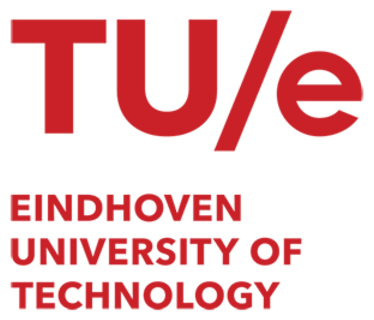

I care about taking models from experimentation to real production impact, and about the
infrastructure that makes that possible at scale.
At Supercomputing Brabant and the TU/e Supercomputing Center I work on
GPU workload optimisation and AI infrastructure for the SPIKE cluster, whose Spike-A extension runs on
NVIDIA DGX B300. I help Brabant-based companies get their AI workloads running at scale. Before that, at
Vencomatic Group, I built anomaly detection models, Azure data pipelines and dashboards
for industrial automation, after a master’s thesis there that cut sorting errors in half.
As co-founder of LoopIt.ai, I led technical strategy and system architecture for an
AI vehicle damage detection platform and mentored several cohorts of university interns. It won the
EAISI AI Incentive Award.
Education
-

MSc Computer Science & Engineering
Eindhoven University of Technology (TU/e)
2023 – 2025 · GPA 7.12/10 · Eindhoven, Netherlands
-
BTech Computer Engineering
Jamia Millia Islamia
2019 – 2023 · Grade 8.54/10 · New Delhi, India